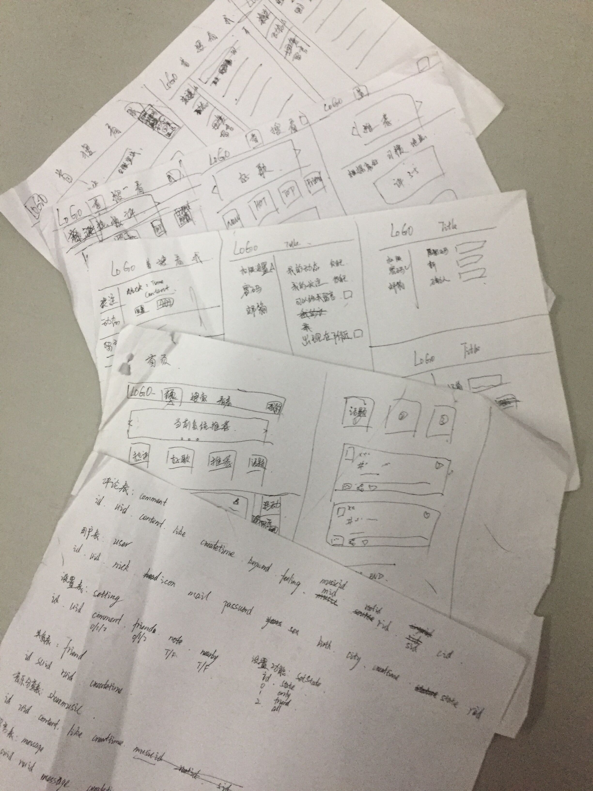

- 01 -
始于2018年3月28日，
立于2018年5月24日，
- 02 -
历经：
57天
1368时
82080分
4924800秒
我们来了！
- 03 -
从一张张设计稿子上的原型
到现在成型的网站
我知道我想要的是什么每天坚持到图书馆，
从八九点坐到闭馆。
为了给大学交一份圆满的答卷。

- 04 -
中间遇到过很多困难，数据库的设计不完善，
爬虫的爬取受到限制，
数据庞大导致查询缓慢等等。
这一切都一点点克服，
一点点解决。
- 05 -
首先很感谢我的导师，在项目开发中给予的帮助和信任，
其次还要感谢学校，
提供了良好的环境，
图书馆真的很棒。
还要感谢我的父母和导员，
他们的支持与理解。
嗯，还有我的女朋友，
少不了她的鼓励和支持。
- 06 -
最后感谢您的到来。如果是为分享、查看热评，
我们提供了一百二十余万条供您浏览，
您还可以发表您的观点。
首页的推荐可以更加精确您的爱好，
在推荐的时候我们会更多的推荐您喜欢的(如果没有计算失误的话)
您还可以关注好友，互发消息，
同时，如果您允许出现在附近的人，
您就可能被我们推荐到附近的人列表，
让更多的人认识您。
- 07 -
如果您是为了学习项目，那我们也十分欢迎您，
项目基于SSM(Spring,SpringMVC,Mybatis)框架
前端框架基于Layui
安全框架使用Shiro
项目开源在Github,地址：https://github.com/amoxu/buzz
如果有问题或者有建议都可以Issue
- 结 -
最后再一次附上联系方式：amoxuk@aliyun.com